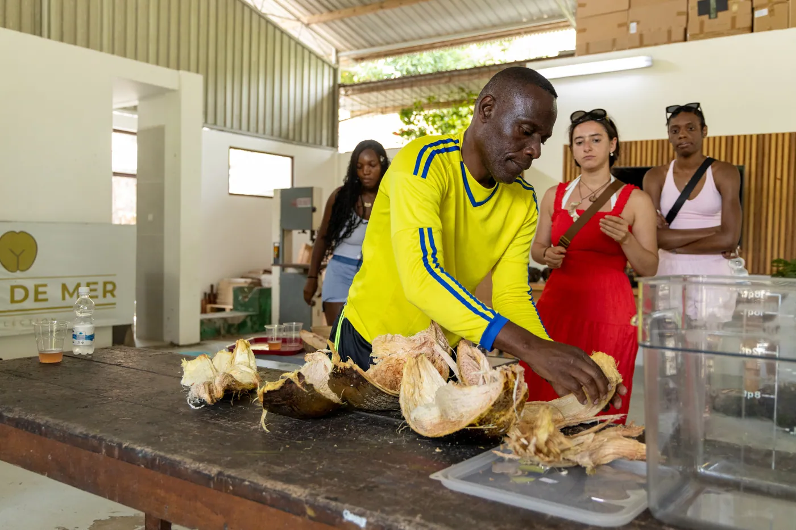
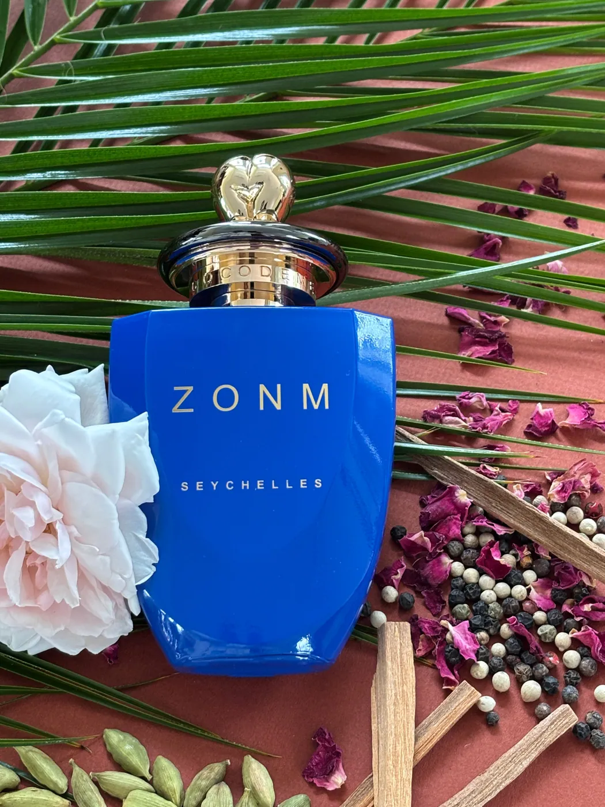
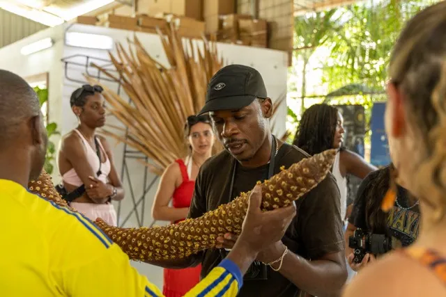

Extracting the Soul of the Coco de Mer

A Journey from the Jungle Floor to Fragrance
The Coco de Mer is not just a symbol of the Seychelles — it is a living mystery. Growing only in the primeval forests of Praslin and Curieuse, this legendary palm bears the world’s largest nut and follows a rhythm entirely its own, taking up to ten years to fall naturally to the forest floor. For decades, its form fascinated the world. But for us, at Coco de Mer Collection, it was always its scent that held the deepest secret.
Where the Story Began
For more than 25 years, our company has worked closely with Coco de Mer, handling the nuts as they arrived fresh from the forest. Every time a husk was removed, the air would fill with an unexpected, intoxicating aroma — warm, fruity, musky, sometimes sweet, sometimes smoky. It was unlike anything else in nature. In 2019, while speaking with Coco de Mer harvesters in the forest, we learned something extraordinary: they do not search for fallen Coco de Mer by sight alone — they follow the scent. The perfume of the husk guides them through the forest.

That moment changed everything.
The Challenge No One Had Solved Before
Turning that aroma into perfume was far from simple. The Coco de Mer is unique in the plant kingdom: it contains no oil. Unlike flowers, resins, or woods traditionally used in perfumery, there was no essential oil to distill.
What followed were several years of scientific research, in collaboration with universities in Italy, trial after trial, failure after failure — until a breakthrough was achieved.
The result: the first industrial patent ever registered in the Seychelles for a Coco de Mer extraction process.
From Forest to Atelier — Within 24 Hours
Timing is everything.
When a Coco de Mer falls naturally in the forest, its husk is carefully removed and immediately wrapped in praline to protect it. A dedicated team transports it straight to Mahé Island, where our artisan begins processing it — usually within 24 hours — ensuring the scent remains intact, alive, and uncompromised.
The husk is then immersed in a specially developed alcoholic solution, where it rests for up to three months. This slow, patient maceration allows the full aromatic spectrum of the Coco de Mer to unfold naturally.
Only time can unlock its soul.
A Living Essence, Never the Same Twice
The essence of Coco de Mer is alive — and no two extractions are ever identical.
Some reveal luminous citrus notes.
Others lean into ripe pineapple, mango, and warm vanilla.
Some are deeply woody, musky, with tobacco-like undertones.
The scent depends on many factors:
- the monsoon season
- the amount of sunlight the husk received
- its maturity and color
Experienced harvesters know: the large, golden-yellow husks, rich with sun, carry the most complex and powerful aroma.
Blending Heritage into Fragrance
Once the Coco de Mer essence is ready, it becomes the heart of our fragrances — blended with natural ingredients that tell the story of Seychelles’ multicultural heritage.

ZONM
A vibrant, grounded composition blending Coco de Mer with cardamom, black pepper, and patchouli — spices first planted by French colonialists at Jardin du Roi.
FAMM
Our feminine signature, combining Coco de Mer with jasmine, gardenia, vanilla, and saffron — scents deeply woven into the sensory memory of the islands.
LODAS
An homage to Seychelles’ Asian roots, infused with lemongrass, pink pepper, and magnolia, wrapped around the warmth of Coco de Mer.
Coco de Mer & Arabic Oud
A tribute to history. Arabs were the first to encounter Coco de Mer, finding the nuts floating in the ocean. This Persian-inspired oud blends Coco de Mer, bergamot, rose, and Arabic oud, uniting maritime legend and Middle Eastern perfumery.

SOVAZ
The Male Coco de Mer
Perhaps the most unusual of all. Created from the male Coco de Mer catkin, the largest catkin in the world, covered in tiny orange-yellow flowers. These flowers — pollinated by the Seychelles gecko — release a scent reminiscent of popcorn, prune, musk, and warm earth. Wild and unforgettable.
A Fragrance That Could Only Come From Seychelles
Every bottle of Coco de Mer Collection perfume carries more than scent — it carries time, forest, sun, science, and heritage. From the moment a nut falls in the forest to the day its essence meets skin, nothing is rushed, nothing is replicated, nothing is artificial.
This is not mass perfumery.
This is extraction of identity.
And it could only happen here.